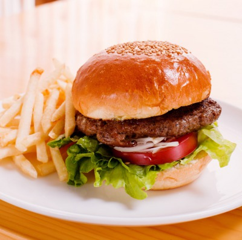
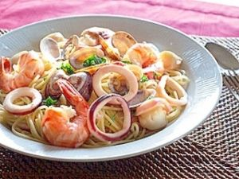
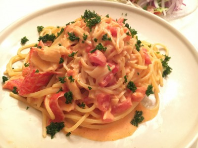
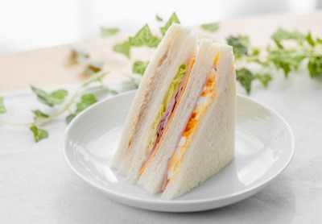
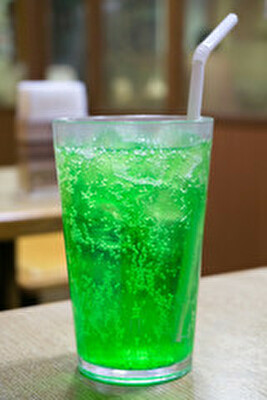
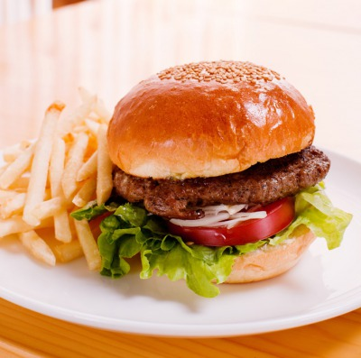
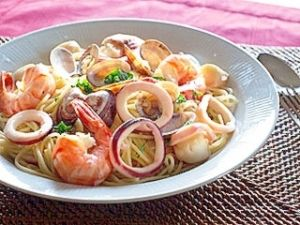
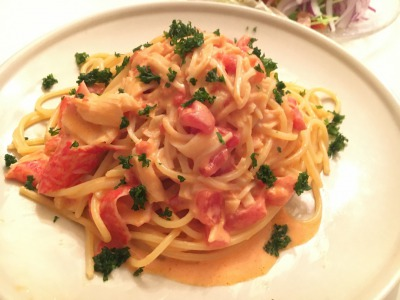
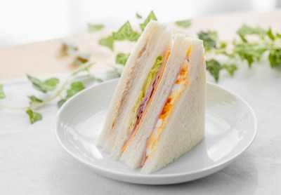
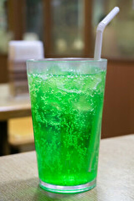

お食事
| オムライス | ハンバーガー  |
| シーフードパスタ  | カニクリームパスタ  |
| サンドイッチ  | クロワッサン.jpg) |
ドリンク
コーヒー.jpeg) | カフェオレ.jpg) |
アイスティー.jpg) | レモネード.jpeg) |
オレンジジュース.jpg) | パッションフルーツジュース.jpg) |
スイカジュース.jpg) | トマトジュース.jpg) |
| ソーダ  | コーラ.jpg) |
デザート
バニラアイス.jpg) | チョコアイス.jpg) |
レモンアイス.jpg) | ティラミス.jpg) |
プリン.jpg) | ブラウニー.jpg) |
| オムライス | ハンバーガー  |
| シーフードパスタ  | カニクリームパスタ  |
| サンドイッチ  | クロワッサン |
| コーヒー | カフェオレ |
| アイスティー | レモネード |
| オレンジジュース | パッションフルーツジュース |
| スイカジュース | トマトジュース |
| ソーダ  | コーラ |
| バニラアイス | チョコアイス |
| レモンアイス | ティラミス |
| プリン | ブラウニー |